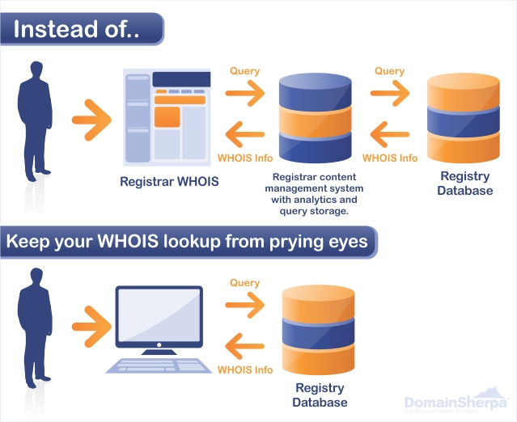

域名买卖
一，概述
域名(米，米米，mm，玉米)
二，域名掉落的过程
要注意的是域名的书面过期日期和实际过期日期是不一样的。
1，域名过期缓冲期(注册商犹豫期,Registrar Hold): 当域名所有人在书面过期日(Expiration date)前未续费，该域名进入过期状态(expired status)。该状态通常为40天，域名关闭所有服务，但域名所有者仍可在40天内以原价再续费。域名进入该状态，说明有不愿续费、懒惰或者耽搁等可能。如果这段期间注册商不发出删除要求，就会被根注册商吃掉预付的$6注册费。
2，赎回期(宽限期,REDEMPTION PERIOD): 40天后，域名进入赎回状态(redemption period)，该状态通常为30天，所有原WhoIs?信息开始不可见，原域名所有者在此期间仍有权续费，但必须额外缴纳一笔罚金，根据域名注册商不同罚金不同，大概在$100左右。域名进入赎回期，说明极有可能是不原续费了。
3, 删除期(PENDING DELETE):最后，在赎回期之后，域名进入锁定(locked)状态，然后进入删除阶段(deletion phase)，删除阶段有五天，在第五天的掉落时间(Drop Time),11:00AM到2:00PM Pacific time（注意：换算成北京时间。例如 5-9掉的域名，实际上是在北京时间5-10的凌晨 2点—4点删除，.org类型的域名，有少部分会比实际删除时间提前多达一天踢出来，这是特例），该域名就会从ICANN(VeriSign?)数据库掉出，进入可用(available)状态，可以公开注册。整个过程从书面过期日开始持续75天。
精确的删除时间存在着一些普遍规律。国际域名的删除时间，集中在北京时间 早上 2 点到 4点 （近两个月集中在2点到3点,最近这几个域名大都是在凌晨2点24分左右注册成功的）如果过了这个时段，你还没发现域名掉下来，请不要存在侥幸心理。其实已经被人在第一时间抢注了。
国内域名的删除时间，通常在域名过期后的第15或16天，早上4：30准时删除。目前还没有专门提供国内域名完全删除列表的，基本上有很多好域名掉到没人知道：），不过你要一个个查询什么时候过期了）。国内域名要记得用公司名注册。
越来越多的域名注册商蓄意修改用户条款来缩减过期状态持续时间，造成域名很快进入赎回期，以图从中牟利。虽然ICANN禁止该行为，但实际上对此无能为力。所以域名有可能在过期35天就被踢出ICANN数据库。Network Solutions, GoDaddy?, Tucows似乎都这么做。
三，域名查询
1，当天的好米地址：可以到金米网或选择当天的好米
http://www.52domain.com/ （.cn米查询）
https://www.snapnames.com/fp.sn?page=bulksearch (这是snap预定的米查询。仅供参考，基本抢不到。)
2, 查找该域名的历史作为判断的标准之一： http://web.archive.org/web/*/http://www.yournam.com (网站档案馆停止更新?)
3.查找删除域名的世界排名，应该仔细查找能带来大量IP的域名。
http://www.alexa.com/data/details/traffic_details?q=&url=www.yournam.com
http://top.265.com/cgi-bin/topsite/topsite.cgi?site=yournam.com
其它
1. Dislexicon - 填入关键词，添加前后缀，就可得到意义，适用于寻找接近于有意义单词的短域名。
2. JustDropped - 可免费地有限制地搜索近日过期域名
3. Word Mixer - 可填入五个关键词，混合组成新的，接近于可发音的词。还有类似工具，随机的流行或者遗弃的词等混合输出页面。
4. WordFinder - 其实是个字迷工具，但对寻找域名也很有帮助。
5. DomainsBot - 域名专用搜索引擎，尤其适用于合成词而非自己发明的词。
6. Online Generators - 如果以上都无效，可以尝试似乎效率不太高的这个。
过期域名搜索:StuckDomains?.com
如果想模仿del.icio.us来一个切割式的域名(domain hack)，可以到另类切割域名搜索网站搜索。
其它网站
whois (domaintools) psychicwhois
creates variations of existing names or generates word from a pattern
checks domain name availability as you type
One of the fastest free tools online
Many tools that make finding a domain easier
Probably the cheapest and best solution yet to finding keyword rich domains fairly quickly
seems a nice site for finding names, although it sometimes gives no results (don’t know why)
evisnet,finds availble short names list
四，域名注册
1 如果是个人注册提交就采用PHP的（epp)提交注册系统，像一般的ASP系统注册域名系统查询不准确，既消耗精力，又猎不到米，白消耗。。。（如果不是用程序提交的话）关于这方面的前期工作一定要做好。。。对自己制作的域名抢注工具，简称为 “枪”
2 国外的注册商enom，修改注册人不用证明，只要你有密码，随时可以更改，所以你的帐号可要保护好了。 这跟新网互联不同（新网互联超过删除期，那你就只能通过书面形式来更改注册人了。安全性明显提高，不过也就麻烦了些。最理想的状态，当然是在删除期内卖出，那么自己删除后再用别人的注册名重新注册一次，也就完成更改注册人的工作了）
3, 常用域名控制面板地址：
五，域名抢注公司
域名抢注(Backorder)就是一个域名在被别人注册之前，抢先将此域名以注册人的名义注册下来的行为。由于专业的域名抢注公司拥有业余玩家所不具备的强大资源，所以个人制作的抢搞过他们的概率非常的小。专业公司都是通过持续地尽量频繁地(而又不会被ban掉)访问 Verisign 服务器以注册域名，一般抢注不到域名不收费。
如果你要的域名并不是非常惹火，可以考虑购买一些专业公司的基本的Backorder，如GoDaddy?价格为$18.95/Backorder?。
如果你要竞争一个惹火的域名，那可以考虑以下三个国外最著名的抢注商。而且尽可能不和它们竞争域名抢注。
1，Pool: 是业内资源最强大和注册成功率最高的之一。收费$60起，如果抢注成功，会发封邮件通知你进入其两阶段竞价系统的竞价第一阶段(“Phase 1”) ，但不会告知有多少人或者是否有人和你竞价。你有三天可以保密出价，如达到前两名或者在头名的30%之内，就进入第二阶段，就是一天的公开竞价拍卖(challenger auction)以最终决定域名归属
2，snap: 收费为$60，但如果有多人同时要它竞争抢注时就会进行一个相对公平的公开的竞价拍卖。该公司进入此业务领域不久，但因其是Network Solutions的独家排他合作伙伴，所以可以优先抢注到Network Solutions持有的域名。snap的发展不温不火。据说snap有时采取，反正是固定价69美圆固定价先订先得，如果是特好的域名，据说snap会藏私。
3，Enom: 提供有名的Club Drop服务。公司位于西雅图，收费仅$30起，但承诺交费越高则提供资源越强大。enom在国内很多站可以预定，通常200人民币就可以起订了，竞价方式，enom的发展很迅速。
六，域名交易
如果想购买已被别人拥有的域名，可以考虑sedo.com，交纳$49域名估价费，然后该公司就会代表你和域名所有人洽谈购买。
域名交易论坛http://www.eachnic.com/clubhttp://www.nameclub.orghttp://bbs.admin5.com/forumdisplay.php?fid=2http://www.miba.cnhttp://www.kingnic.com/bbs/http://bbs.chinaz.com/index.asp?boardid=21http://www.im286.com/forumdisplay.php?fid=27
七，域名停放
域名停放(Domain Park)服务主要是利用域名带来的访问者达到广告点击收益的，所以一般情况下要求您所持有的域名有一定的访问者（流量）。能带来流量的域名包括：带有极佳关键词的域名、被搜索引擎收录的域名、原来建过站的域名、打错的错别域名、同名不同域名后缀的域名等。
域名停放服务有哪些服务商适合您？
国内：SilverClicks?(SC) 银点 、RedDns?(RD)亚洲注册 、BaiHei?(BH)白黑域名网、DNParking(DN)DNParking
国外：Parked、DomainSponsor?、NameDrive?、DomainHop?、Fabulous、GoldKey?、 ParkingDots?、ParkingSite?、Sedo、TrafficParking?、TrafficValet?、TrafficZ?等．
互联网上主要的停放域名赚钱网站：
中文有：银点：http://www.silverclicks.com.cn亚洲：http://www.asiaregister.com白黑：http://www.baihei.com英文的公司主要有：http://www.parked.comhttp://www.domainsponsor.comhttp://www.parkingsite.comhttp://www.dotzup.comhttp://www.fabulous.comhttp://www.domainhop.comhttp://www.revenuedirect.comhttp://www.sedo.comhttp://www.trafficz.comhttp://www.namedrive.com
旧工具
一，域名分析软件DNA(普及版)
域名分析软件（普及版）是由软件设计高手Anil Kumar开发的一个优秀域名分析工具，可运行在中英版的Win95/Win98?/NT上，它具有下列功能： 能查到所有顶级域名（包括通用顶级和国家代码顶级域名）下注册的域名资料。
可以选择想查找的顶级域名。
查找域名时，域名名称可以从软件中输入，也可以从文件导入。
可以同时进行多个Whois域名查找。
可以保存域名查找结果。
可以拷贝、打印和输出（转为html格式）域名清单。
能够根据要求构建域名，关键字可以从软件中输入，也可以从文件导入。
域名分析软件（普及版）目前的最高版本为v2.1英文版。 下载本软件
http://www.chinatelcom.net/nametools/dna.zip
二，Intervation Domain Alchemy
域名分析软件,一个优秀域名分析工具，可运行在中英版的Win95/Win98?/NT上.只有250K但功能不弱。
以下是其操作界面。 下载本软件
http://www.chinatelcom.net/nametools/appraisal.zip
三，Namelt (jwsg)
NameIt?是一个十分简单的能帮助您找到网站名称的辞典式的工具。其程序要求您做的只是以标准英文字体输入您的网站的内容主题，并指出网站的类型，如商业、组织或其他等。 下载NameIt?
http://hotfiles.zdnet.com/cgi-bin/texis/swlib/hotfiles/info.html?fcode=00104P
四，whois Ultra
whois Ultra有一个秘密武器：能根据您的感兴趣的名称自动帮您搜索并组配好的域名。 下载whois Ultra
http://www.chinatelcom.net/nametools/whoisi.exe
五，Domain Quester
Domain Quester允许您以不限量的关键字去搜寻域名。您只要输入任何数量的同您的业 务有关的关键字，就能找到您中意的域名。 下载Domain Quester
http://www.chinatelcom.net/nametools/questerprosetup.exe
六，Domain Name Finder
Domain Name Finder 是域名注册服务商的得力工具。现在找到一个好域名并非易事，Domain Name Finder可以帮您忙：只要求您选择少许关键字，就可以搜索到大量的未注 册域名。注：这个程序是服务器程序，需要Perl 5环境。 下载Domain Name Finder http://www.web-shack.net/cgi/dnf/
七，DomainOMatic?
DomainOMatic?是一个十分简便的域名工具，能帮您查找国际域名信息、管理和研究域名,只需键入您感兴趣的域名，会得到一个相关域名的清单。 下载DomainOMatic? http://hotfiles.zdnet.com/cgi-bin/texis/swlib/hotfiles/info.html?fcode=0012SC
八，WhoIsNot? Lite
WholsNot? Lite是一个帮助您选择域名的好工具。只要键入名称和关键字，会出现一个包含您所输入的关健字的域名目录。
下载WholsNot? Lite
http://hotfiles.zdnet.com/cgi-bin/texis/swlib/hotfiles/info.html?fcode=0012PS%20
参考
域名whois安全查询
To bypass the registrar when doing searches:
From "How To Keep Your Domain Name Searches Safe From Poachers" at Domain Sherpa:
...[use] your computer’s terminal access that connects directly to registry databases, rather than using a web interface through your computer’s browser (see figure below). By doing that, you bypass the “middleman” registrar.

On a Mac or in Linux, do the following:
Open the Terminal application (located at /Applications/Utilities/Terminal.app). For quick access, simultaneously press Command+Space and then type in “Terminal”.
Type “whois query.ext” without quotes, where “query” is the domain and “ext” is the extension. For example, type “whois domainsherpa.com” to perform a WHOIS lookup of this website.
Review the output. If the domain is unregistered, it will display, “No match for QUERY.EXT.”
On a Windows-based computer, do the following:
Download Whois v1.01 from Microsoft and open the application.
Type “whois query.ext” without quotes, where “query” is the domain and “ext” is the extension. For example, type “whois domainsherpa.com” to perform a WHOIS lookup of this website.]
Review the output. If the domain is unregistered, it will display, “No match for QUERY.EXT.”
In a web browser from any computer operating system: If you don’t want to use command line prompts, at the very least you should query
InterNIC, which is operated by ICANN, directly via their website. At InterNIC you can do a WHOIS search for the following TLDs: .aero, .arpa, .asia, .biz, .cat, .com, .coop, .edu, .info, .int, .jobs, .mobi, .museum, .name, .net, .org, .pro, and .travel.
While the above three procedures do not guarantee that your domain name search will not be tracked, they do make it far less likely.
参见
- WebsiteDeal：网站交易：WebsiteDeal 是一个在线交易平台，用于让站长们自由买卖各种网站。网站分为两部分，一是面向想要卖出手中网站的卖家，一是面向想要购买特定网站的买主，只要交易合法，其他都没什么门槛和约束。
Dom Dash ：域名工具 ：说 Dom Dash 只是一个域名工具其实还不够准确，Dom Dash 本身包括了域名管理的功能之外，比如续费提醒等，还包括不少 SEO 信息，包括反向链接，搜索引擎收录之类的功能，非常的全面。
Domainrr：域名管理工具|：Domainrr 是一款可以集中管理多个域名的在线应用，为用户提供了一个有趣而有效的解决方案来存储多种类型的信息。它能够存储所有的域名信息，有关的日期信息，以及登记资料。 网站还支持导出你管理的所有域名为纯文本文件。
LazyRevenue：网站、域名买卖 |：LazyRevenue 是一个用于网站、域名买卖的在线市场，主要包括网站出售、网站模版出售以及域名分类等板块，对此有需求的朋友可以留意一下。
10 Tools For Finding, Registering And Managing Domain Names|
一个完美的域名在你的脑海中形成，于是你快速在网站去检查它是否可用，你拖延了几分钟去注册那个域名，结果却发现它已经被某个人抢注了。那么在搜索和尝试注册之间间隔了多长时间？一个案例是少于90秒。Daily Domainer讲述了一个让人感兴趣的故事，宣称存在一个漏洞可以让域名tasters在几分钟内中途截取、分析和注册域名。 一位内部人士表示，“每当你进行一次whois搜索，你将冒着失去你宝贵域名的危险。” ICANN下属的Security and Stability Advisory Committee (SSAC)并没有找到关于Domain Name Front Running(PDF)足够硬的证据，但提议用户将他们的遭遇公布出来。这里有域名搜索窃贼如何行动，及一些如何避免成为一位受害者的技巧。
domain name analyzer pro 批量域名扫描工具及其使用经验
Inside a Drop Catcher's War Room
How to Snatch an Expiring Domain
参见
Domain Name Disputes |Interesting Facts About Domain Names |访问习惯与域名长度之间的微妙关系 |域名估价模式